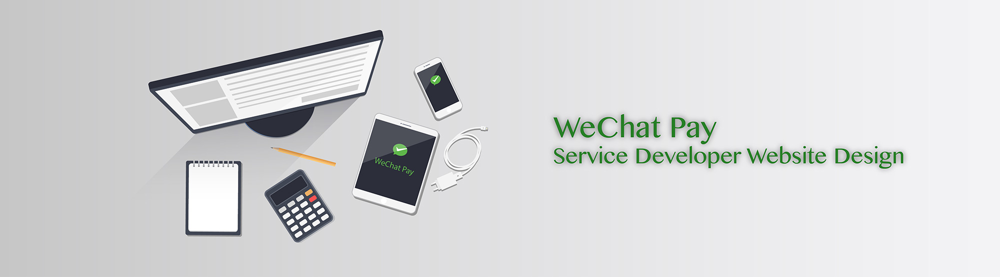
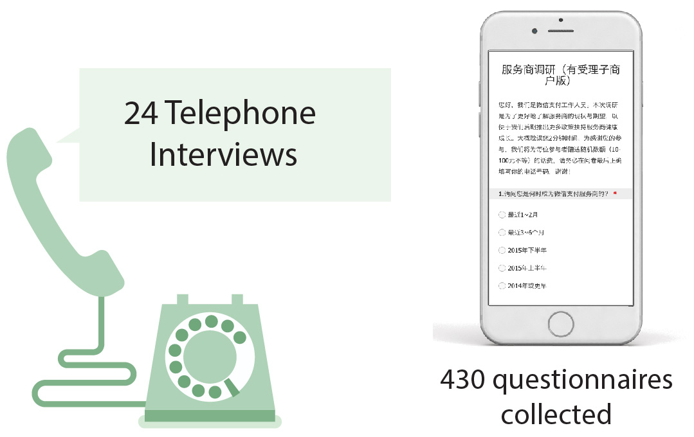
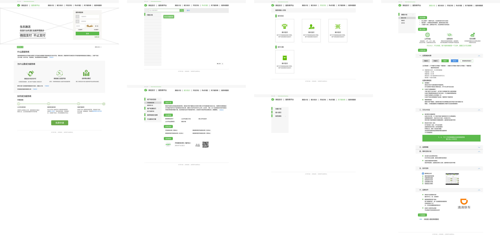

July 2016
Interaction Design
Web Design
Service Design Intern
WeChat Pay, Shenzhen
Advised by senior service desinger Leo Huang
User Research
Requirements Define
Wed Design
WeChat Pay is expanding off-line payment around China now.
WeChat Pay Service Developer(WPSD) integrates WeChat Pay
technically to existing payment system for different fields of
business, such as schools, hospitals, retails, malls, catering,etc.
WeChat Pay welcomes more developers to join WPSD.
But the existing WPSD information was mixed with WeChat
business information, which was confused and unclear for
developers. So WPSD website design was proposed. And the purpose of the web design is to attract more third party developers to join WPSD and become the partners of WeChat Pay. I was responsible
for the interactive wireframe, information structure design.
I spent two weeks to do the user study by telephone interviews and questionnaire in order to understand users'need and requirements and the potential problems in the existing system.

The target users for the web are developers
Through the user study, I understood
the needs of developers and some problems
existed between WeChat Pay and developers.
Developers wanted:
• More clear guiding from WeChat Pay
• Get news of WeChat official policy
immediately
• Get in touch with WeChat staff easily when
encountering some technical troubles
• Get more supports from WeChat Pay
Based on user research, I designed wireframes, content, information structure of WPSD website.

Wireframe Design of WPSD Web
Based on the wireframes and information structure I designed,
visual designer Zhou designed the web interface visually
and front-end developer Zhe developed the web.
You can get access to the WPSD website here.
© 2017 My Profile. All Rights Reserved | Design by Chenghong